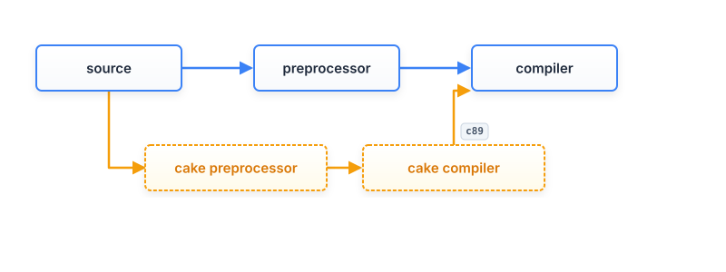
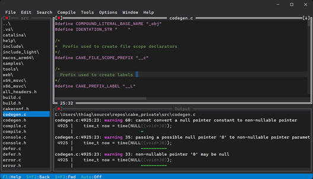

Home | Manual | Static Analysis | Playground
Cake - C23 and Beyond
- About
- Web Playground
- Use cases
- Features
- Build
- Installation (optional)
- Running cake
- IDE
- Road map
- Participating
- How cake is developed ?
- Cake x CFront
- License
The C Programming language 1978
"C is a general-purpose programming language which features economy of expression, modern control flow and data structures, and a rich set of operators. C is not a "very high level" language, nor a "big" one, and is not specialized to any particular area of application. But its absence of restrictions and its generality make it more convenient and effective for many tasks than supposedly more powerful languages."
"In our experience, C has proven to be a pleasant, expressive, and versatile language for a wide variety of programs. It is easy to learn, and it wears well as one's experience with it grows"
The C Programming language Second Edition 1988
"As we said in the preface to the first edition, C "wears well as one's experience with it grows." With a decade more experience, we still feel that way."
C is everywhere. From operating systems to embedded devices, from high-performance apps to essential technology, C powers the technology we rely on every day. Timeless, efficient, and universal.
About
Cake is a compiler front end written from scratch in C by a human, implementing the C23 language specification and beyond.
It serves as a platform for experimenting with new features, including C2Y language proposals, safety enhancements, and extensions such as literal functions and defer statements.
The current backend generates C89-compatible code, which can be pipelined with existing or old compilers to produce executables.

Cake aims to enhance C's safety by providing high-quality warning messages and advanced flow analysis, including object lifetime checks.
Web Playground
This is the best way to try.
http://cakecc.org/playground.html
Use cases
Note: Cake is still in development and has not yet reached a stable version.
Cake can be used as a static analyzer alongside other compilers. It generates SARIF files, which are recognized by popular IDEs such as Visual Studio and Visual Studio Code, providing a seamless integration.
It can also function as a preprocessor, converting C23 code to C89. This allows developers to use modern or experimental features while targeting compilers that do not yet support the latest language standards.
Cake is also a cross-compiler. For example, on Windows it can use Linux headers and generate GCC-compatible code for Linux, and vice versa. This makes it very useful when developing multiplatform code.
Another use of Cake is as a library to parse source code and build an AST, which can then be used for other purposes; for instance, automatic serialization, automatic documentation and more.
Features
- C23 preprocessor
- C23 syntax analysis
- C23 semantic analysis
- Static object lifetime checks (Extension)
- Sarif output
- Cross compiling
- C89 backend
- Style checker
- AST
- Lots of diagnostics
Build
GitHub https://github.com/thradams/cake
MSVC build instructions
Open the Developer Command Prompt of Visual Studio. Go to the src directory and type
cl build.c && build
This will build cake.exe, then run cake on its own source code.
GCC on Linux build instructions
Got to the src directory and type:
gcc build.c -o build && ./build
Clang on Linux/Windows/MacOS build instructions
Got to the src directory and type:
clang build.c -o build && ./build
Note: Cake currently compiles and runs on macOS. However, Clang's system headers are not yet parsed correctly on macOS, so you may need to provide a few declarations manually while testing.
If you encounter an error such as: fatal error: X11/Xft/Xft.h: No such file or directory
Ubuntu / Debian: sudo apt install libx11-dev libxft-dev
Fedora: sudo dnf install libX11-devel libXft-devel
Arch Linux: sudo pacman -S libx11 libxft
openSUSE:sudo zypper install libX11-devel libXft-devel
These headers are used by the IDE.
Running tests
Passing test argument on any platform will run a large set of tests.
gcc build.c -o build && ./build test
Emscripten build instructions (web)
Emscripten https://emscripten.org/ is required.
First do the normal build.
The normal build also generates a file lib.c that is the amalgamated version of the "core lib".
Then at ./src dir type:
call emcc -sSTACK_SIZE=8388608 -DMOCKFILES -Wno-multichar "lib.c" -o "Web\cakejs.js" -s WASM=0 -s EXPORTED_FUNCTIONS="['_CompileText']" -s EXTRA_EXPORTED_RUNTIME_METHODS="['ccall', 'cwrap']"
This will generate the \src\Web\cake.js
Installation (optional)
Installation is optional. Cake can be built and run directly from the src
directory as shown above, without installing anything. Installing simply
copies the compiler and supporting files into a system directory and updates
the system PATH so the cake command can be executed from any terminal.
Windows
Run the installer as Administrator.
install.exe
The installer:
- Copies Cake files into
Program Files - Updates the system
PATH - Removes obsolete Cake
PATHentries from previous installations
Linux / macOS
Run the installer using:
sudo ./install
The installer:
- Copies Cake files into the installation directory
- Creates or updates a file in
/etc/profile.d/ - Adds Cake to the system
PATH
Changes become available in new login sessions.
Running cake
Samples
cake source.c
this will output ./platform short name/source.c
See Manual
IDE
The Cake IDE was developed with the help of AI tools. It has now been adopted as part of the Cake project and will be maintained alongside the rest of the codebase. Over time, the IDE code will be reviewed, refined, and gradually humanized as the project evolves.
The IDE works in macOS, Windows and Linux.

Road map
- function literal and local functions implementation
- Making it usable as C89 backend and fixes
- Flow v2 algorithm was delayed
Participating
You can contribute by trying out cake, reporting bugs, and giving feedback.
Have a suggestion for C?
DISCORD SERVER
How cake is developed ?
I use Visual Studio 2022 IDE to write and debug the Cake source. Cake parses itself using the MSVC includes and generates the X_86_msvc directory after the build. The Linux version is tested inside WSL, and the macOS version is currently the least tested but is expected to work.
Cake x CFront
CFront was the first C++ compiler, designed to translate C++ source code into C. Initially compatible with C89, it diverged as the C and C++ languages evolved independently.
Cake maintains alignment with the standard specifications and ongoing development of C, ensuring full compatibility.
The compiler introduces extensions that preserve the fundamental design of C while supporting experimentation and open contributions to the language's evolution.
License
Cake uses the same license of GCC. GPLv3